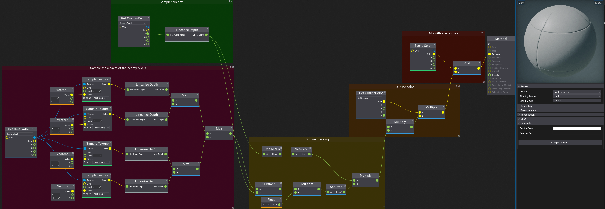
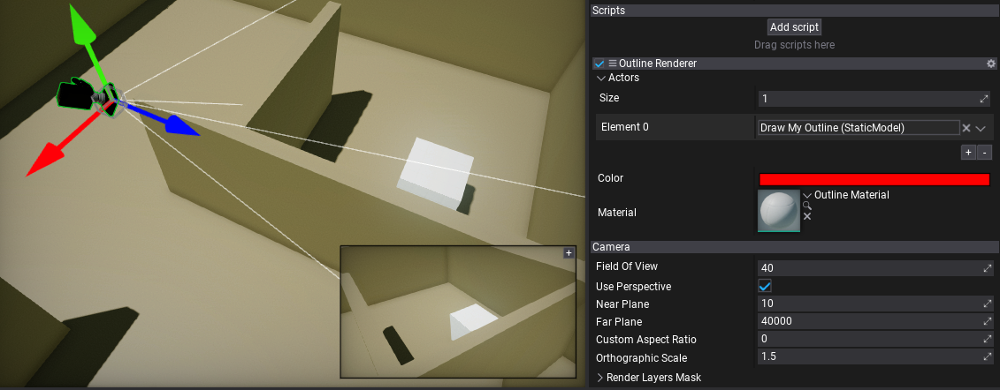
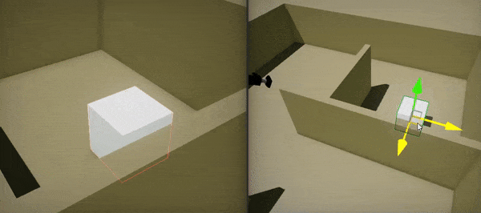

HOWTO: Render object outline
In this tutorial you will learn how to create custom PostFx script and use it to render objects to a custom depth buffer for selection outline rendering.
1. Create PostFx material
Firstly, create post-process material that will use scene depth buffer and custom depth buffer to outline custom objects.
- Set the Domain to Post Process.
- Add new parameter OutlineColor of type Color
- Add new parameter CustomDepth of type GPUTexture
- Setup the graph as shown in a picture below (download image to zoom in)

2. Create script
Create a new script and add code that performs the effect rendering. Use PostProcessEffect class that inherits from Script and can be used as postfx on camera and view.
using System.Collections.Generic;
using FlaxEngine;
public class OutlineRenderer : PostProcessEffect
{
private MaterialInstance _material;
/// <summary>
/// The list of actors to render.
/// </summary>
public List<Actor> Actors = new List<Actor>();
/// <summary>
/// The outline color.
/// </summary>
public Color Color = Color.Red;
/// <summary>
/// The outline postfx material.
/// </summary>
public MaterialBase Material;
/// <inheritdoc />
public override bool CanRender => Enabled && _material && Actors?.Count != 0;
/// <inheritdoc/>
public override void OnEnable()
{
_material = Material?.CreateVirtualInstance();
}
/// <inheritdoc/>
public override void OnDisable()
{
Destroy(ref _material);
}
/// <inheritdoc/>
public override void Render(GPUContext context, ref RenderContext renderContext, GPUTexture input, GPUTexture output)
{
Profiler.BeginEventGPU("Outline");
// Pick a temporary depth buffer
var desc = GPUTextureDescription.New2D(input.Width, input.Height, PixelFormat.D32_Float, GPUTextureFlags.DepthStencil | GPUTextureFlags.ShaderResource);
var customDepth = RenderTargetPool.Get(ref desc);
context.ClearDepth(customDepth.View());
// Draw objects to depth buffer
Renderer.DrawSceneDepth(context, renderContext.Task, customDepth, Actors);
// Render outline
_material.SetParameterValue("OutlineColor", Color);
_material.SetParameterValue("CustomDepth", customDepth);
Renderer.DrawPostFxMaterial(context, ref renderContext, _material, output, input.View());
// Cleanup
RenderTargetPool.Release(customDepth);
Profiler.EndEventGPU();
}
}
3. Setup scene
Now, add created script to the Camera actor, link Material property of the script to created outline postfx material and link the objects to draw their outline in Actors list. You can also adjust the color of the outline.

4. Test it out!
Finally start the game and see the result.
